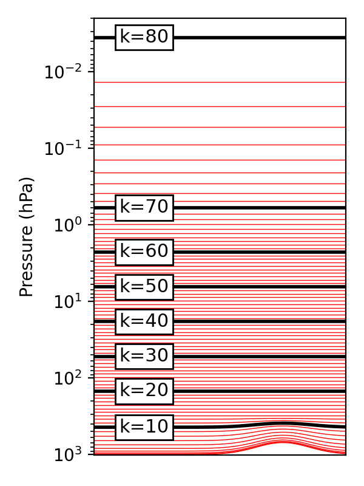

Table of contents
- Basic Settings
- Coordinate System (数式をハイブリッド化済)
- Physical Constants (変更なし)
Basic Settings
Here we present the basic setup of the model.
Coordinate System
座標系は、基本的に、経度λ、緯度φ、正規化気圧η (定義は後述)
を用い、それぞれは直交するとして扱う。ただし、地中の鉛直座標はzを用いる。
Longitude is discretized at equal intervals MODULE:[ASETL].
λi=2πIi−1i=1,…I−1The latitude is the Gauss latitude φj described in Mechanics, and it is derived from MODULE:[ASETL], the Gauss-Legendre integral formula. This is the zero point of the Legendre polynomial of order J with μ=sinφ as the argument, MODULE:[GAUSS].
If J is large, we can approximate
φj=π(21−Jj−1/2)j=1,…J−1Usually, the grid spacing of longitude and latitude is taken to be approximately equal to J=I/2. This is based on the triangular truncation of the spectral method.
The normalized atmospheric pressure σ is discretized appropriately at unequal intervals so as to better represent the vertical structure of the atmosphere MODULE:[ASETS]. As described later in Mechanics, the value of the layer boundaries (σk−1/2) is defined in k=1…K+1, and then
気圧pはk=0…Kについて、定数Ak+1/2, Bk+1/2を用いて次の式で定義する。
pk+1/2=Ak+1/2+Bk+1/2psただし、A1/2=AK+1/2=0, B1/2=1, BK+1/2=0であり、よってp1/2=ps, pK+1/2=0である。また、σ≡p/psは以下のように表せる。
σk+1/2=psAk+1/2+Bk+1/2さらに、基準地表気圧p0=1000 hPaを用いてηを次の式で定義する。
ηk+1/2=p0Ak+1/2+Bk+1/2Ak+1/2, Bk+1/2,p0が定数であるため、ηk+1/2も定数であり、これをモデルの鉛直座標とする。ただし、第二章で示すように、離散化を行った後の式はηk+1/2が陽には現れない形になっている。
整数レベルにおける気圧pk,(k=1,2,…K)は次の式で内挿する。
pk={1+κ1(pk−1/2−pk+1/2pk−1/2κ+1−pk+1/2κ+1)}1/κ鉛直座標を80層にした場合の整数レベルの気圧を例示する。下図において、地表気圧は場所によって1000hPaから700hPaまで変化しており、下部の層はそれに追従する一方で、上部の層は等圧になっており、両者が滑らかに接続されている。

Each predictor is entirely defined on a grid of (λi,φj,σk) or (λi,φj,zl). (The underground level, zl, is described in the section on physical processes.)
In the time direction, the predictive equations are discretized at evenly spaced Δt and time integration is performed. However, if the stability of the time integration may be impaired, the Δt may change.
Physical Constants
The basic physical constants are shown below MODULE:[APCON].
| Header0 |
Header1 |
Header2 |
Header3 |
| earth radius |
a |
m |
6.37 ×106 |
| acceleration of gravity |
g |
ms−2 |
9.8 |
| atmospheric pressure specific heat |
Cp |
J kg−1 K−1 |
1004.6 |
| Atmospheric gas constant |
R |
J kg−1 K−1 |
287.04 |
| Latent heat of water evaporation |
L |
J kg−1 |
2.5 ×106 |
| Water vapor constant pressure specific heat |
Cv |
J kg−1 K−1 |
1810\bsp. |
| Gas constant of water |
Rv |
J kg−1 K−1 |
461. |
| Density of liquid water |
dH2O |
J kg−1 K−1 |
1000. |
| 0 Saturated vapor at 0 ∘ |
e∗(273K) |
Pa. |
611 |
| Stefan Bolzman Constant |
σSB |
W m−2 K−4 |
5.67 ×10−8 |
| Kárman Constant |
k |
|
0.4 |
| Latent heat of ice melting |
LM |
J kg−1 |
3.4 ×105 |
| Water Freezing Point |
TM |
K |
273.15 |
| Constant pressure specific heat of water |
Cw |
J kg−1 |
4,200. |
| The freezing point of seawater |
TI |
K |
271.35 |
| Specific heat ratio of ice at constant pressure |
CI=Cw−LM/TM |
|
2397. |
| water vapor molecular weight ratio |
ϵ=R/Rv |
|
0.622 |
| coefficient of provisional temperature |
ϵv=ϵ−1−1 |
|
0.606 |
| Ratio of specific heat to gas constant |
κ=R/Cp |
|
0.286 |